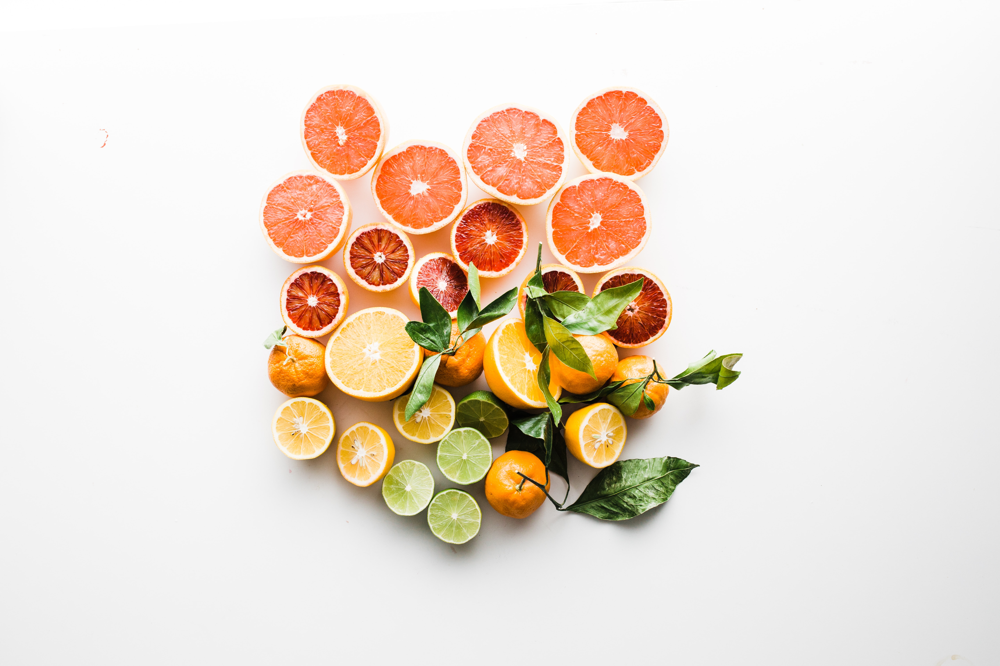

Health
Buying and eating seasonally to your area can be a great way to reduce transport costs.
Eat the Seasons Website
Local fun https://www.nytimes.com/crosswords/game/mini Walking
Tweets by TotallyWildUK

Is good for you.
Tweets by TotallyWildUK